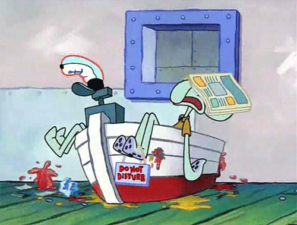
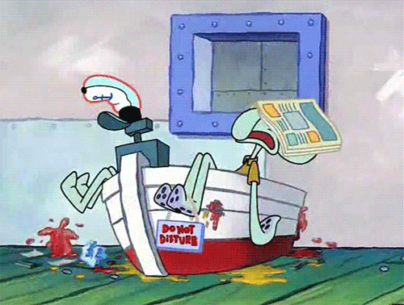

| Horario | Materia |
| 09:00 - 10:00 | Programación |
| 10:00 - 11:00 | Algoritmos |
| 11:00 - 13:00 | Programación Orientada a Objetos |
| Horario | Lunes | Martes | Miércoles | Jueves | Viernes |
| 07:00 - 08:30 | Bases de datos | Ecuaciones Diferenciales | Electrónica Analógica | Redes de computadoras | Programación WEB |
| 08:30 - 10:00 | Ecuaciones Diferenciales | Programación WEB | Bases de datos | Electrónica Analógica | Diseño Digital |
| 10:00 - 10:30 | DESCANSO | ||||
|---|---|---|---|---|---|
| 10:30 - 12:00 | Diseño Digital | Redes de computadoras | Programación WEB | Bases de datos | Redes de computadoras |
| 12:00 - 13:30 | Redes de computadoras | Diseño Digital | Ecuaciones Diferenciales | Programación WEB | Bases de datos |
| 13:30 - 15:00 | Electrónica Analógica | Bases de datos | Diseño Digital | ||
| Rojo | Verde | |
| Cafe | Marron | Tinto |
| Naranja | ||
| Blanco | Negro | |